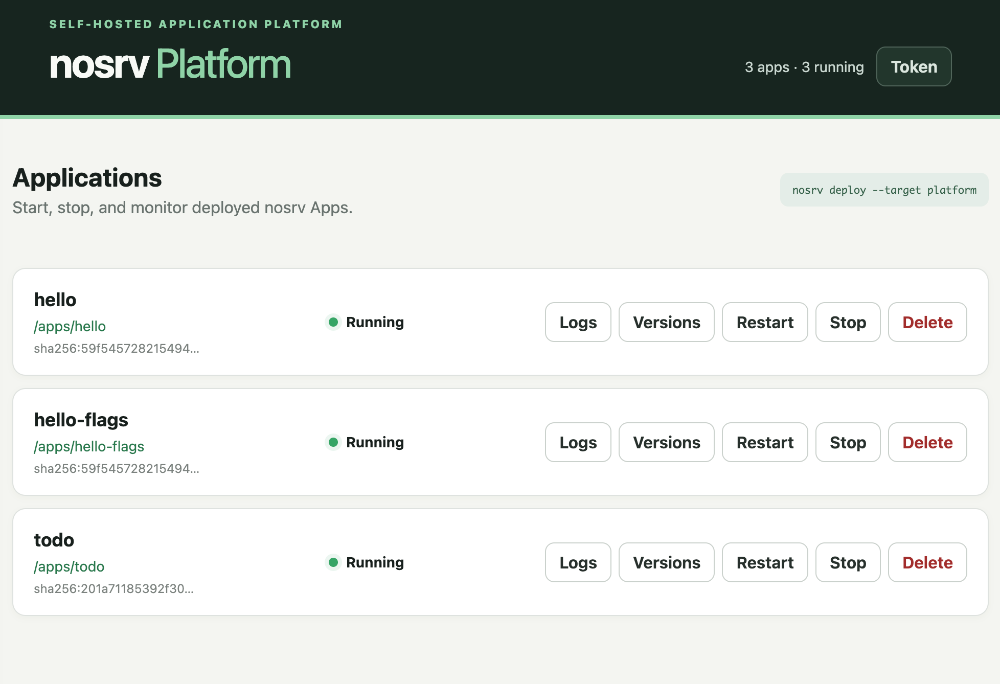

Familiar HTTP
Receive a standard Request, return a standard Response, and use ordinary Web APIs.
PORTABLE WEB APPS · SELF-HOSTED PLATFORM
Build a small TypeScript App against Web Standard Request and Response. Run it locally, manage it on your own nosrv Platform, or hand deployment to a supported cloud provider.
$ npx nosrv create my-app
$ cd my-app
$ npm install
$ npx nosrv dev
nosrv dev server
Local: http://127.0.0.1:8787nosrv deploy
ONE SMALL CONTRACT
nosrv keeps application code focused on HTTP, portable context, and declared resource capabilities. Provider details stay at the deployment boundary, so a useful internal tool does not have to begin as an infrastructure project.
Receive a standard Request, return a standard Response, and use ordinary Web APIs.
Declare database, KV, and storage needs and use runtime-provided environment, secrets, and identity instead of importing a cloud SDK.
Ship an API with a frontend, a static-only site, scheduled work, or a small file collection.
A compact specification, examples, and JSON management commands give coding agents firm boundaries.
THE APP CONTRACT
The handler stays portable. Runtime services arrive through ctx, with
requirements visible beside the code that uses them.
import { defineApp } from "@nosrv/core";
export default defineApp({
requires: { db: true },
async fetch(request, ctx) {
const { rows } = await ctx.db.sql.query(
"SELECT * FROM notes",
);
return Response.json(rows);
},
});SELF-HOSTED, WHEN YOU WANT IT
Run one lightweight Platform with Docker or systemd. Deploy from another machine, watch linked source during development, and operate Apps from the browser or an agent-friendly CLI.

START SMALL. KEEP AN EXIT.
Begin with one handler, plain HTML, or even a lone index.html.
Run locally or link source into Platform with automatic restarts.
Send a versioned Artifact to your Platform or select a public target.
Move to dedicated infrastructure without rewriting the App boundary first.
A SMALL WEB APP CAN START HERE
npx nosrv create my-app